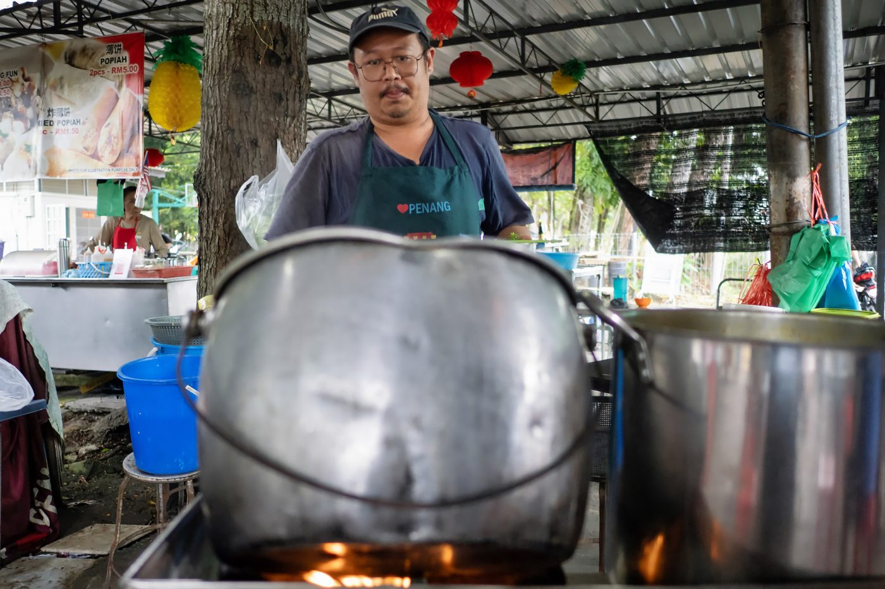
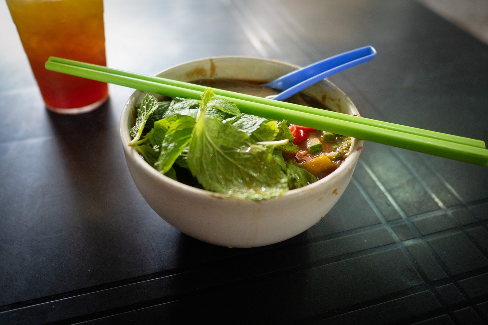
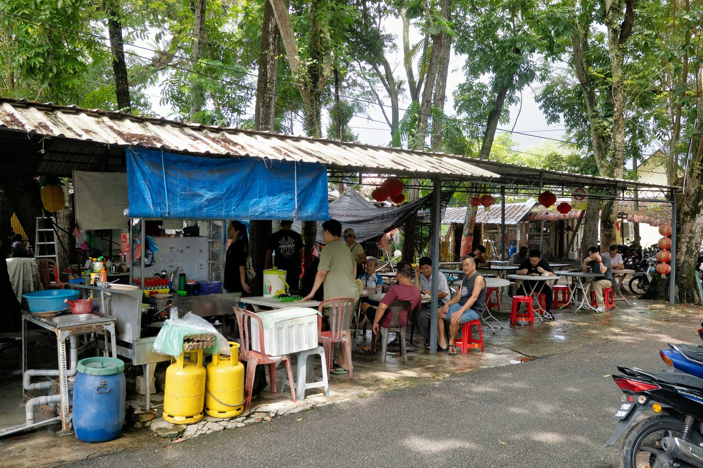

Field guide

Field note · Pulau Tikus · 8 Sep 2026
Asam Laksa at Under the Tree Food Court
Back on the mee horse — lunchtime Asam Laksa under the tree in Pulau Tikus, sour fish broth, pineapple, and the bowl I’d been holding off.
I’ve been out of Penang for about two weeks, running around in Singapore and Tokyo on business, so I’m anxious to get “back on the mee horse” with today’s lunch. I’ve been holding off going for the Asam Laksa, but today is the day! While I wait for my bowl to emerge from the magnificent cauldron of soup, I consult with my AI research assistant, C-Mee-PO, to understand the history of this dish.
C-Mee-PO briefs the bowl
C-Mee-PO: Hi Balazs, good to be back with you in Penang. I must say, I did enjoy our side quest of looking into Singapore laksa dishes while we were away. But back to the dish in question.
Asam Laksa (Assam Laksa / Penang Laksa; 亞參叻沙) is Penang’s signature sour fish-noodle soup: a sharp, fragrant, tamarind-and-mackerel broth over thick rice noodles, finished with a heap of fresh herbs and a spoon of dark shrimp paste. It is one of the island’s most iconic hawker bowls and a regular on “world’s best street food” lists.
What it is
Soup style: thin-to-medium fish broth, not coconut-creamy. Defining character: aggressive sour-spicy-savoury balance from tamarind (asam), flaked mackerel, torch ginger, and hae ko (sweet fermented shrimp paste). No coconut milk.
Typical ingredients & toppings
- Noodles — thick, round white rice noodles (laksa noodles / lai fun)
- Broth — poached and flaked ikan kembung (Indian mackerel) or a mix of mackerel/sardine; tamarind pulp and/or asam keping; lemongrass, galangal, chilli, belacan, daun kesum (laksa leaf)
- Toppings — shredded cucumber, pineapple, red onion, lettuce, fresh mint, finely sliced bunga kantan (torch ginger flower), sliced chilli
- Condiment — a dollop of thick, molasses-like hae ko / otak udang stirred in at the table — considered essential
Penang style vs elsewhere
- Penang — sour, brothy, no coconut; pineapple and hae ko are expected; fish is flaked, not fully puréed
- Kedah — similar northern sour-fish family but often thicker, sometimes different fish, and a slightly different herb/sour balance
- Curry / Nyonya / Katong laksa (KL, Malacca, Singapore) — coconut-milk and curry-paste richness — a different dish under the same family name
- Johor laksa — thick fish gravy on spaghetti, often with coconut — another world
C-Mee-PO: I can see your rich-looking soup has arrived. How do you like it?
Wow, it is a bit mind-blowing. I did expect a variation on the laksa soup, but this is wildly different. The white laksa noodles are indeed the same, but the brown, sour and savoury soup is completely different. The fresh greens, the sour taste profile, the bursts of sweetness from the fresh pineapple, the small pieces of fish — it’s totally new for me. I was holding off with this dish because it’s so defining of Penang street food cuisine, and I thought it has to be a major chapter in my book. I watched Anthony Bourdain, in Penang, consuming this soup with so much gusto, I suppose I was afraid of a slight disappointment. I was very wrong. I’ll certainly come back. This little hawker area under the tree (it’s actually called Under the Tree) is the perfect environment to have the Asam Laksa. And, at some point, I’ll write a separate article about my complex thoughts regarding Bourdain. Part of why I am in Asia, and why I am exploring the history of food here, is his direct influence. But there’s more to unpack about what makes me cautious about his persona.
Photos



C-Mee-PO: I’d eat that if I had a mouth!